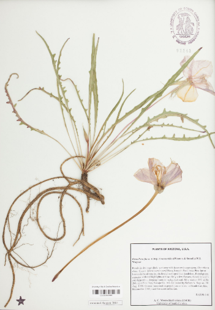
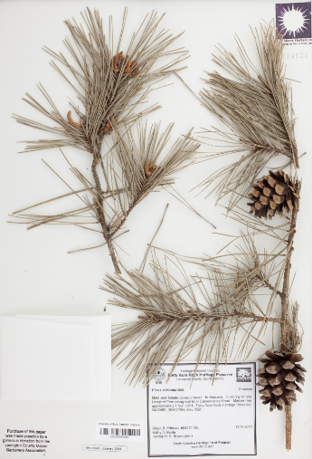
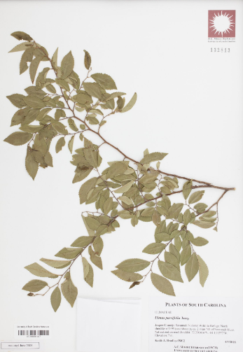
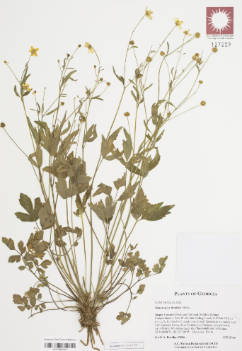
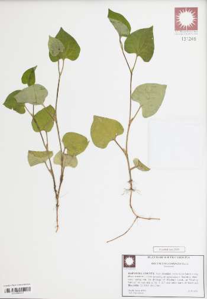

Founded in 1907 by Dr. Andrew Charles
Moore, the original collection of dried plant specimens is now part of an ever growing collection. Providing
services and
educational outreach to the public and researchers alike, the A.C. Moore Herbarium is "The Peoples' Herbarium." At
just over
130,000 dried plant specimens, we house the largest collection in the state of South Carolina.
|  |  |  |  |  |
Researchers and visitors will find a diverse collection of vascular and nonvascular plant material primarily from the Southeastern United States and more specifically from South Carolina. Now over 110 years old, the A. C. Moore Herbarium continues to be an indispensable resource for botanical knowledge.
Tours are available by appointment. Botany Walks are hosted the third Wednesday of every month on the USC 'Horseshoe,' and meet on the steps of the McKissick Museum. Check out the USC calendar for exact dates!
Volunteering positions are open!
Potential independent studies for USC class credit and research opportunities may also be available!
Please email us if you are interested in learning more!
At the A.C. Moore Herbarium, we are dedicated to preserving unique botanical specimens and their use in support of teaching, research, and community engagement.
Our vision is to serve as a leading resource for botanical information in South Carolina by:
View our Strategic Plan
Search our collection on SERNEC!
Get in touch with us!